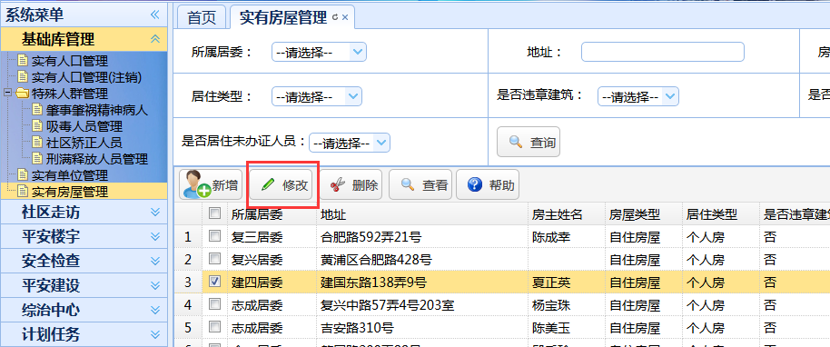
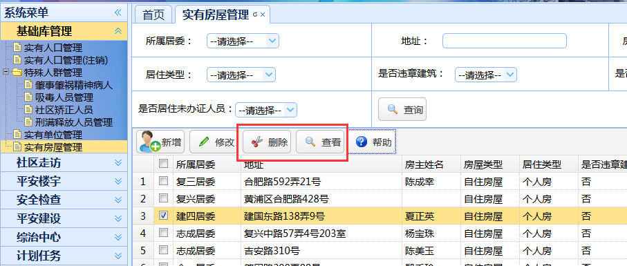

|
操作指南：
1、新增：点击“新增”按钮，随后会跳出实有房屋新增的页面；
房屋地址选择：在新增界面选择居委后，点击房屋地址旁的“选择”按钮进入地址信息选择页面，勾选地址信息后点击“选定”按钮。可以点击“新增地址”按钮加入新地址。
房主姓名选择：点击房主姓名旁的“选择”按钮进入房主信息选择页面，勾选地址信息后点击“选定”按钮。
信息填写完成后，点击“保存”按钮进行实有房屋信息的保存，操作完成返回列表页面。
2、修改：勾选一条记录后，点击“修改”按钮，随后会跳出实有房屋修改的页面；

修改界面会显示您所选中那条记录的相应数据。
房屋地址选择：在修改界面选择居委后，点击房屋地址旁的“选择”按钮进入地址信息选择页面，勾选地址信息后点击“选定”按钮。可以点击“新增地址”按钮加入新地址。
房主姓名选择：点击房主姓名旁的“选择”按钮进入房主信息选择页面，勾选地址信息后点击“选定”按钮。
信息填写完成后，点击“保存”按钮进行实有房屋信息的保存，操作完成返回列表页面。
3、删除：勾选一条记录后，点击“删除”按钮，可删除该条实有房屋信息；

查看：勾选一条记录后，点击“查看”按钮，可查看该条实有房屋的具体信息
点击房主姓名后跳转到相应的实有人口界面
|